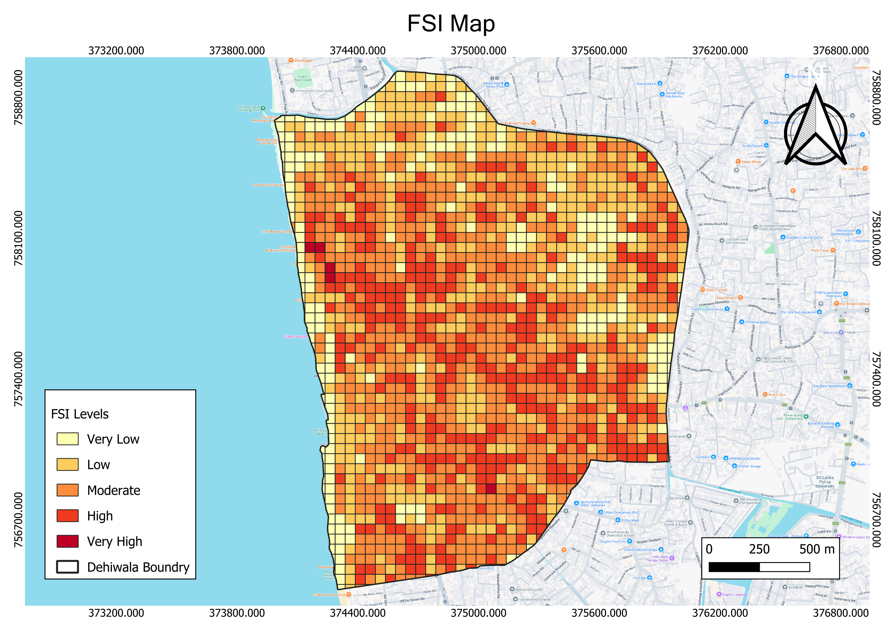
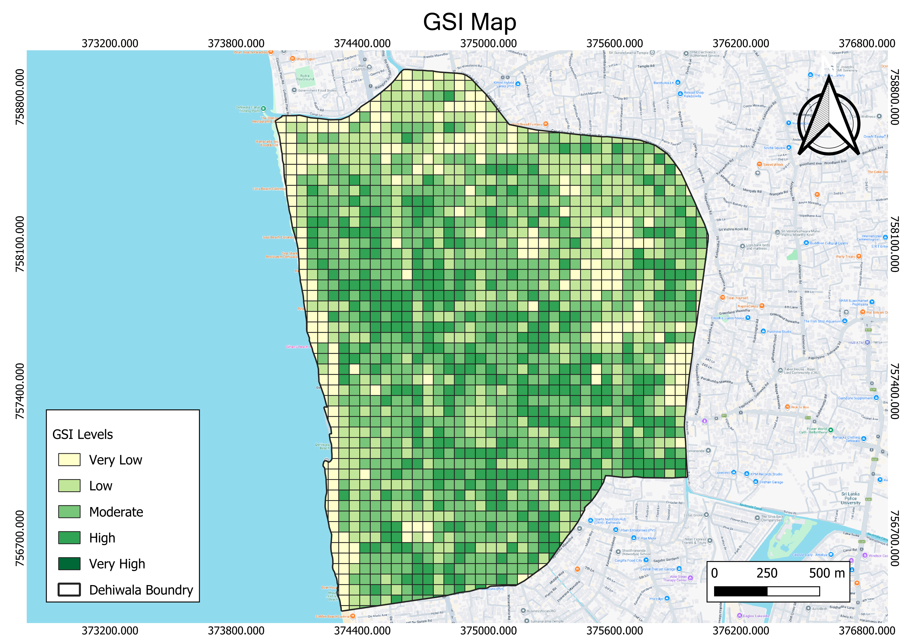
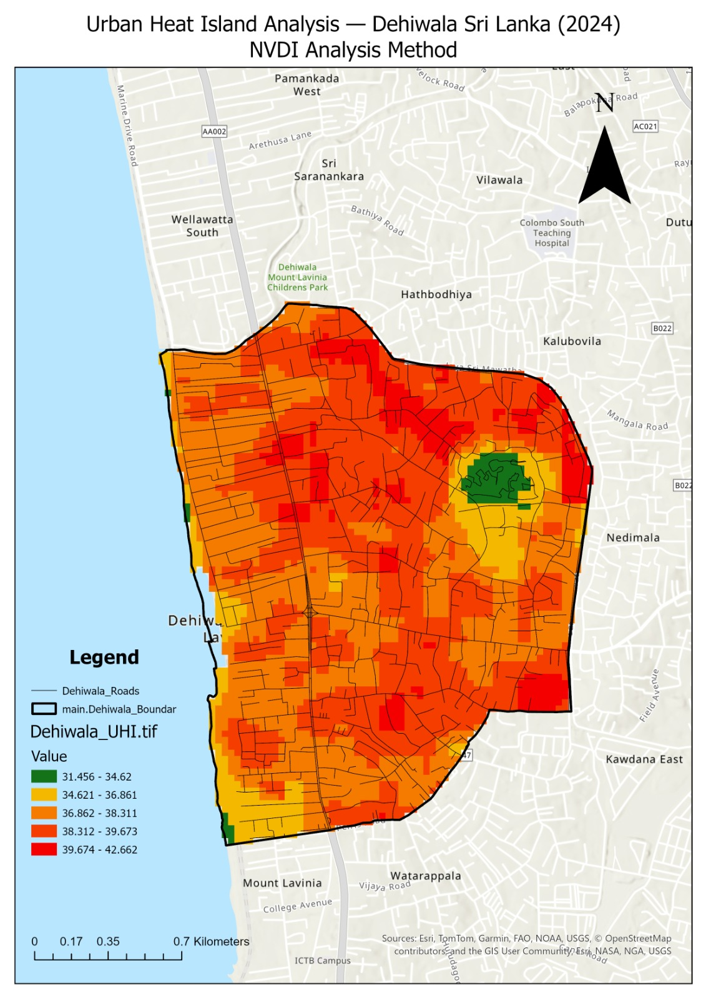
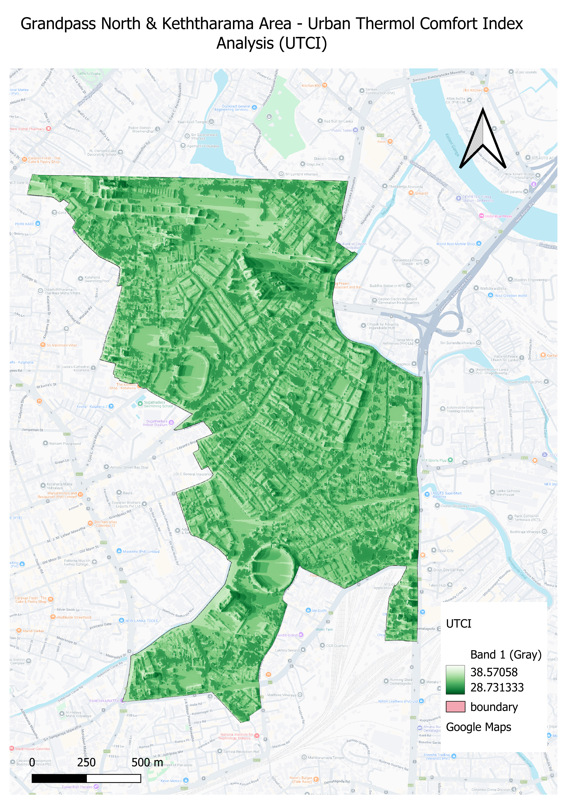

GN Divisions
11
Total Population
69,520
Built-up Area
88%
Mean FSI
1.8
Interactive Study Area Map
Click a GN division for stats
Real-Time Environmental Conditions
Fetching live data…
🌡 Temperature
—°C
🤔 Feels Like
—°C
💧 Humidity
—%
💨 Wind
—km/h
🌧 Rainfall
—mm
☀️ UV Index
—
🌫 AQI
—
💨 PM2.5
—µg
▸ Next 24 Hours — Temperature Forecast
sDNA Centrality Analysis
Betweenness and Closeness computed at 500m, 2000m and 5000m network radii
All Scales
500m — Local
2000m — Neighbourhood
5000m — Regional
Space Matrix — Density Analysis
FSI, GSI and OSR — the three-axis Space Matrix for Dehiwala Junction

Space Matrix
Floor Space Index (FSI)
Built floor area relative to plot area. High FSI along the Galle Road axis.

Space Matrix
Ground Space Index (GSI)
Building footprint coverage per grid cell.

Space Matrix
Open Space Ratio (OSR)
Available open space per unit of built floor. Very low in the commercial core.
▸ Space Matrix — Comparative Index Values
Urban Maturation Index (UMI)
Equal-weighted composite of Centrality, FSI, GSI, OSR and Entropy — each min–max normalised 0–1

Composite Index
Urban Maturation Index
A mature high-intensity core surrounded by rapidly transitioning residential edges.

Land Use Mix
Shannon Entropy Index
Land-use diversity. Higher entropy near the station supports transit-oriented development.
▸ UMI Component Breakdown by GN Division
Environmental Analysis
Surface heat and UTCI thermal comfort mapping

Thermal
Urban Heat Map
Surface temperature peaks over the paved commercial strip where canopy is thinnest.

Thermal Comfort
UTCI Analysis Map
Universal Thermal Climate Index — strong heat stress at the junction core during midday.
Mean UTCI
39°C
Peak Surface Temp
47°C
Heat Stress Zone
62%
Population by GN Division
11 Grama Niladhari divisions — total population 69,520
Total Population
69,520
GN Divisions
11
Highest — Mt. Lavinia
8,086
Lowest — Jayathilaka
5,215
▸ Population Distribution by GN Division
Synthesis — Key Findings Network
Relationships between urban form, mobility, environment and land use
▸ Finding Relationships · Hover to explore
Morphology
Thermal
Mobility
Land Use
Density
Issues & Potentials
Key problems and opportunities identified through contextual analysis
⚠ Problems
P1
Junction congestion. High betweenness along Galle Road means through-traffic and local access compete for the same narrow carriageway.
P2
Fragmented open space. OSR is critically low in the commercial core — what little exists clusters at the periphery.
P3
Thermal stress. UTCI peaks at ~39°C over the paved commercial strip where FSI is highest and tree canopy is absent.
P4
Uneven urban maturity. UMI shows a highly mature core against a rapidly transitioning residential edge — pressuring infrastructure.
✦ Potentials
K1
Strong local closeness. 500m closeness centrality is high — the junction already works as a walkable centre if reclaimed from vehicle dominance.
K2
Mixed land-use base. Shannon entropy is comparatively high near the station — a foundation for transit-oriented intensification.
K3
Regional connectivity. 5000m betweenness links Dehiwala to the broader Colombo south corridor — potential for higher-order services.
K4
Rail proximity. The Dehiwala station anchors a transit catchment that is currently under-utilised for TOD-style planning.